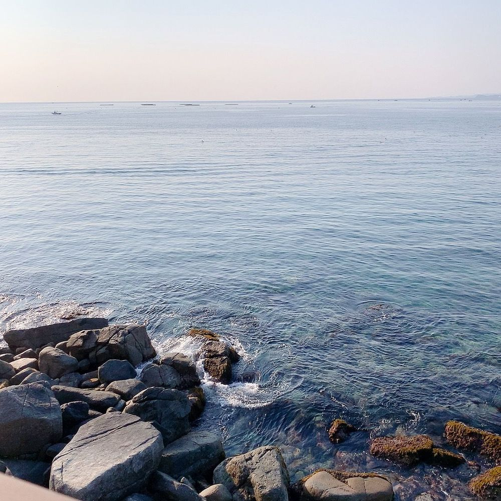
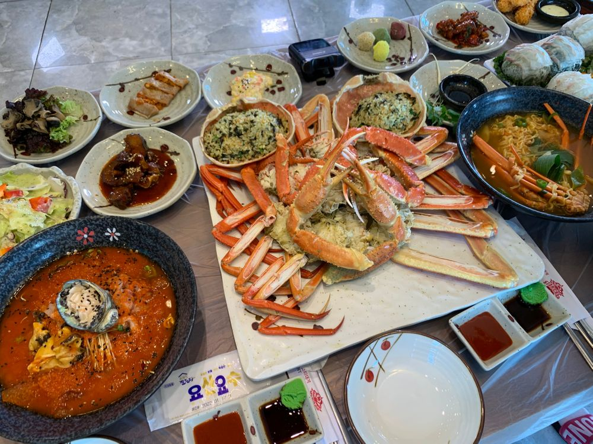

おはよう😃
ひいだよ🍓

韓国で初めて海行ったの🏖
日が出るタイミングも見れたんだけど
すごく綺麗だったなあ…
そしてカニもめーーーーっちゃ美味しかった。
最近…というか年取ってから
海鮮大好きになった🥺
今日で
5月もラストですね〜😳
毎回言ってることだけど
本当にあっという間ですね…
あっという間だと感じるからこそ
1日1日を大切にしたいなと思います😌
あ、前にもらってたQ&Aやろうかな〜！！
【예뻐と귀여워言われたら嬉しいのはどっち？？】
どっちも嬉しいけど…
撮影のときは예뻐
普段の日常で言われるときは귀여워が嬉しいかな笑
【最近の宿舎のエピソード知りたい！！】
チェヨンオンニがよく料理してくれます🍳
トッポッキとか〜ポックンパとか〜
今度お弁当作ってってお願いした🍱笑
【カレーに入っている玉ねぎもダメ？】
火が通ってる辛くないのだったら全然OKです👌🏻
むしろ牛丼の中に入ってる玉ねぎ大好きだもん🤗
【ドーナッツどんな味が好きか知りたいなあ🍩】
ドーナツあんまり好きってわけじゃないけど本当にたまーにすごく食べたくなる🥺
ミ◯ドだったらエンゼルクリーム👼🏻
小さい頃はよく小さいドーナツ6個くらい入ってるの…
名前忘れたけどそれよく食べてたなあ💭
また質問待ってるよ😊
ではまたっ
오늘은 5월 마지막 날!!! 벌써 6월이다😳
오늘도 즐거운 하루를 보내용🤗
TMI는...
일찍 일어나기 성공💪🏻ㅋㅋㅋ
약간 졸리지만!!
추천메뉴는...간장 게장🦀
속초에서 먹었던 대게가 너무너무 맛있었더라...
지금도 생각이 난다 진짜...
또 먹고싶다!!!
주말 & 5월 마지막 날이니까
6월을 위해!! 더 열심히 할 수 있게!!!
고급한 음식 먹어야지😊ㅎㅎㅎ

대박이지??ㅠㅠ
ばいばーい👋🏻
ひいまる🥟